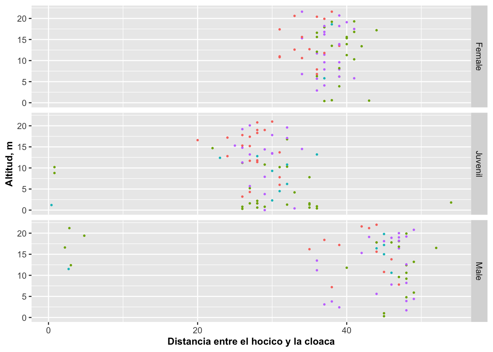
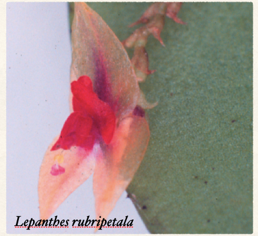

Facet_Grid
Fecha de la ultima revisión
## [1] "2020-10-07"Gráficos en cuadrícula con facet_grid
Esta opción forma una matriz de gráficos por fila y columna por una variable seleccionada. Es una opción que facilita ver los patrones cuando hay dos variables discretas.
Facet grid es un opción de gran ventaja de usar ggplot2: Organizando los gráficos en una cuadrícula. Eso resulta ser muy útil para la producción de un gráfico por cada par de variable discreta; o sea, cada grupo producirá un gráfico de acuerdo a su categoría. Los próximos ejemplos se basan en la base de datos del lagartijo Anolis.
Facet_grid con cuadrículas paradas
En la Figura hacemos una demostración utilizando la altura del sitio de muestreo, pero con las categorías se generó una al lado de las otras en una serie. Note la tilde, ~, antes del nombre de la variable SEX_AGE. Si usamos solamente una variable (como en este caso), la presentación de los gráficos cambiará dependiendo si la tilde está antes o después de la variable, tal demostrado a más adelante.
rr=ggplot(Anolis, aes(SVL, HEIGHT))
rr+geom_point(aes(color=Survey_Site))+
facet_grid(~SEX_AGE)+
labs(y="Altitud, m")+
theme(legend.position="none")+
theme(axis.title=element_text(size=10,face="bold"))+
xlab("Distancia entre el hocico y la cloaca")Facet_grid con cuadrículas acostadas
Ahora ponemos la variable antes de la , pero note que después de la hay un punot .. Notemos el efecto en la Figura a continuación.
rr=ggplot(Anolis, aes(SVL, HEIGHT))
rr+geom_point(aes(color=Survey_Site), size=.5)+ # usar "size" para cambiar el tamaño de los puntos
facet_grid(SEX_AGE~.)+
labs(y="Altitud, m")+
theme(legend.position="none")+
theme(axis.title=element_text(size=10,face="bold"))+
xlab("Distancia entre el hocico y la cloaca")
Facet_grid con cuadrículas representando dos variables
Ahora veremos en la enorme ventaja de facet_grid al representar dos variables discretas simultáneamente, la edad_sexo de los Anolis y el periodo del año (seco o lluviosos) del muestreo. Note que el parámetro ahora es SEX_AGE\(\sim\)SEASON.
rr=ggplot(Anolis, aes(SVL, HEIGHT))
rr+geom_point(aes(color=Survey_Site))+
facet_grid(SEX_AGE~SEASON)+
labs(y="Altitud, m")+
theme(legend.position="none")+
theme(axis.title=element_text(size=10,face="bold"))+
xlab("Distancia entre el hocico y la cloaca")Escalas libres en los ejes
Ahora dejemos que en la escala en el eje de X sea variable. La escala del periodo seco va de 20 a 50 cm y del periodo lluvioso va de 0 a 50 cm. Con esta representación se puede apreciar mejor que los nuevos especímenes nacen en mayores cantidades en el periodo lluvioso. Note que el parámetro ahora es SEX_AGE~SEASON y scales=free_x.
rr=ggplot(Anolis, aes(SVL, HEIGHT))
rr+geom_point(aes(color=Survey_Site))+
facet_grid(SEX_AGE~SEASON, scales="free_x")+
labs(y="Altitud, m")+
theme(legend.position="none")+
xlab("Distancia entre el hocico y la cloaca")
Cambio de las posiciones de las descripciones
En el próximo gráfico veremos cómo cambiar el lugar donde están colocadas las descripciones de las categorías (sexo y estación del año) usando switch. Si se usa switch en el eje de X, la descripción de ese eje, que antes estaba arriba, ahora pasará abajo. Si se usa en el eje de Y, la descripción de la derecha pasa a la izquierda. Si se usa el parámetro both ambas descripciones cambian a su lado opuesto.
rr+geom_point(aes(color=Survey_Site))+
facet_grid(SEX_AGE~SEASON, switch = "y")+
labs(y="Altitud, m")+
theme(legend.position="none")+
theme(axis.title=element_text(size=10,face="bold"))+
xlab("Distancia entre el hocico y la cloaca")
Facet_grid con las escalas de los ejes variable en X y Y
La opción de space con facet_grid, da la oportunidad de modificar el rango de los ejes de Y y X. Por conveniencia, algunos de los rangos de los ejes de las figuras anteriores son iguales. Pero si uno quisiera que cada figura tuviera su propio rango, uno usa space=free_y o free_x para que sean proporcionales a la escala de los datos en uno o el otro eje. Sin embargo, a veces se quiere que ambos ejes sean proporcionales al rango de los datos y en tal caso se usa free solamente como se demuestra en la Figura.
rr+geom_point(aes(color=Survey_Site))+
facet_grid(~SEX_AGE, scales="free")+
labs(y="Altitud, m")+
theme(legend.position="none")+
theme(axis.title=element_text(size=10,face="bold"))+
xlab("Distancia entre el hocico y la cloaca")+
theme(axis.text.x = element_text(angle = 60, vjust = 1, hjust=1))+
theme(axis.title=element_text(size=10,face="bold"))+
theme(axis.text.x=element_text(size=5,face="bold"))+
theme(axis.text.y=element_text(size=10,face="italic"))
Usando los datos de diamonds en el paquete ggplot2
- evalúa la relación entre el precio de los diamantes y los quilates (carat) con geom_point.
- haga un facet_grid con la calidad del corte del diamantes (cut) y el color del diamante (color).
- No aplique la función scales=“free”.
- cambiar los nombres de los ejes a “Quilates” y " Precio del los diamantes".
- asegurar que la leyenya de precio se pueden leer.
- Someter su gráfico en Edmodo en formato .png.

- Ejercicio para entregar. Valor 10 puntos. Usando los datos de la orquídea Lepanthes rubripetala, una especies endémica de Puerto Rico. Selecciona la variable números de flores en una planta (Num_flowers), El tamaño de las flores (Flower_size) y haga un “box plot” para cada población y en “facet_grid” con la población (Population). Vea aquí el gráfico, que debería tener.
- Cambie los colores de los puntos de las diferentes poblaciones.
- Añade la información en los ejes en español.
- Añade un titulo al gráfico.
- Cambiar los valores en el eje de x que se pueda leer
- Contesta la siguiente preguntas basado en el gráfico
- Cual población tiene más dispersión en el tamaño de las flores
- Cual población tiene menos dispersión en número de flores
- Someter el script y el gráfico en un documento .html en Edmodo.
Esa orquídea diminuta esta limitada a Puerto Rico (endémica) y se encuentra mayormente el EL Yunque.
library(readr)
Lep_rupPetal_All_Data <- read_csv("Data_files_csv/Lep_rupPetal_All_Data.csv")
Leprub=Lep_rupPetal_All_Data
#names(Leprub)
Opciones y Parametros de facet_grid:
ggplot(el archivo de datos, aes(la variable continua))
facet_grid(a~b, scales, space, switch, drop)
facet: a~b para presentar una serie de gráficos tabulados en X y Y
scales: usar free si se quiere que las escalas sean determinadas por los gráficos individualmente; si no, todas los gráficos tendrán la misma escala.
space: la producción de los gráficos se hará al mismo tamaño; pero si usa free_y, la altura será proporcional a la escala de Y; y si es free_x, el ancho será proporcional a la escala de X; si usa free, entones ambos ejes variarán individualmente; note que este parámetro no tiene efecto si los datos no varían en los diferentes grupos.
switch: ubica la descripción abajo cuando es X, y a la izquierda cuando se usa Y, o cambia ambos al usar usar both.
drop: añadir drop=FALSE para que muestre todas las variables aunque no tengan información; solamente funciona si toda la fila o columna de datos está vacía.